Year Built- Boxplot
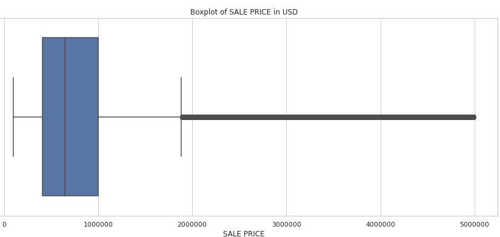
Year Built- Count
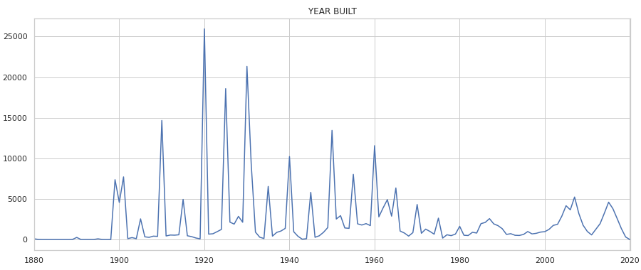
Sale Price- Boxplot
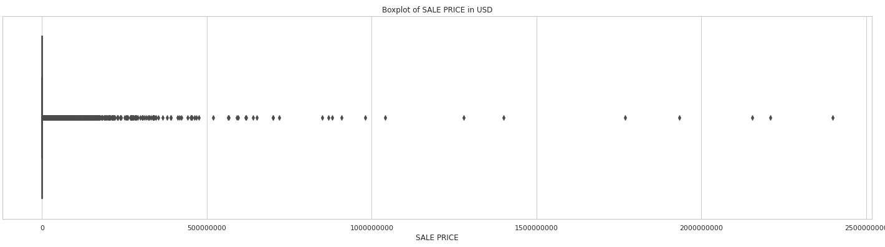
SALE PRICE was highly right skewed. So, we log transform it so that it give a better results.
Sale Price Distribution by Building Age
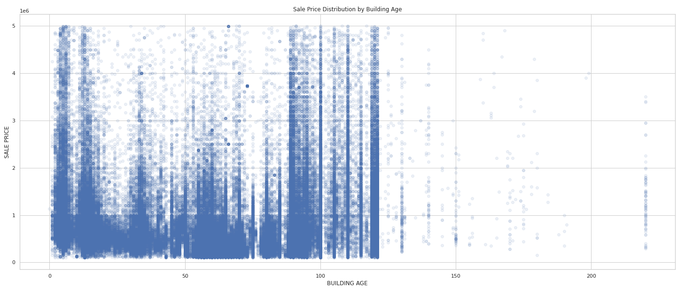
Gross Square (Net Usable Area + Structural Space) Feet vs Sale Price
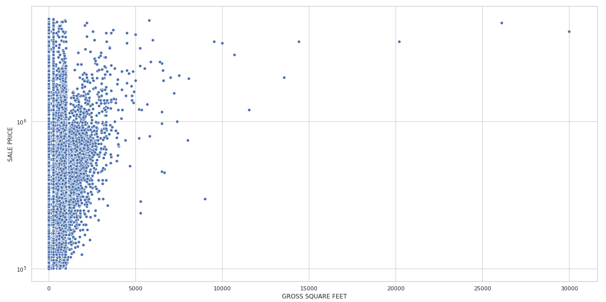
Gross Square feet vs Sale linear regression model fit
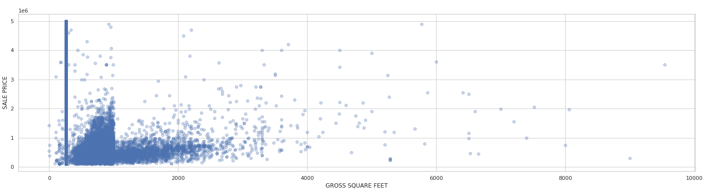
Land Square Feet vs Sale Price
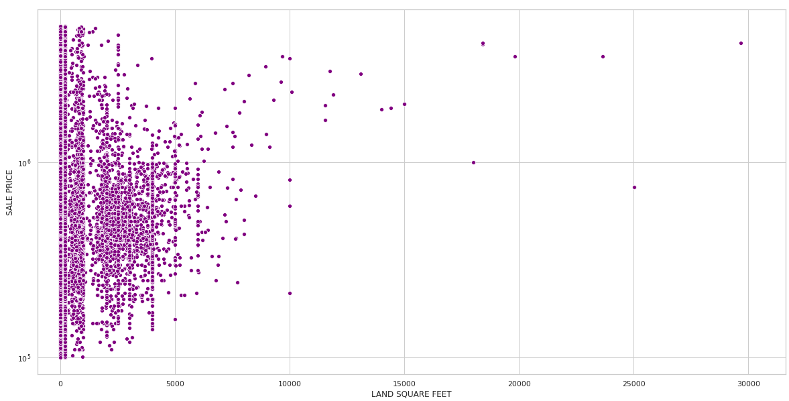
Land Square feet vs Sale linear regression model fit
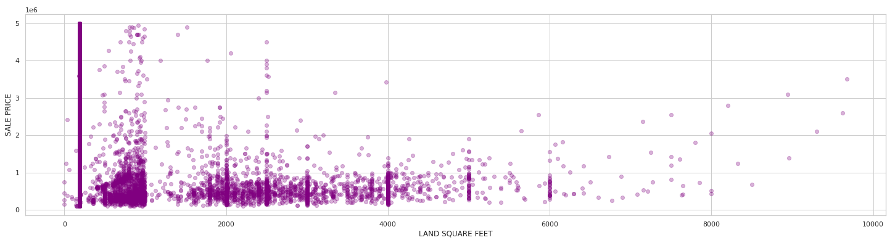
Gross Square feet vs Sale per Borough(1. Manhattan, 2. Brooklyn, 3. Queens, 4. The Bronx, 5. Staten Island)
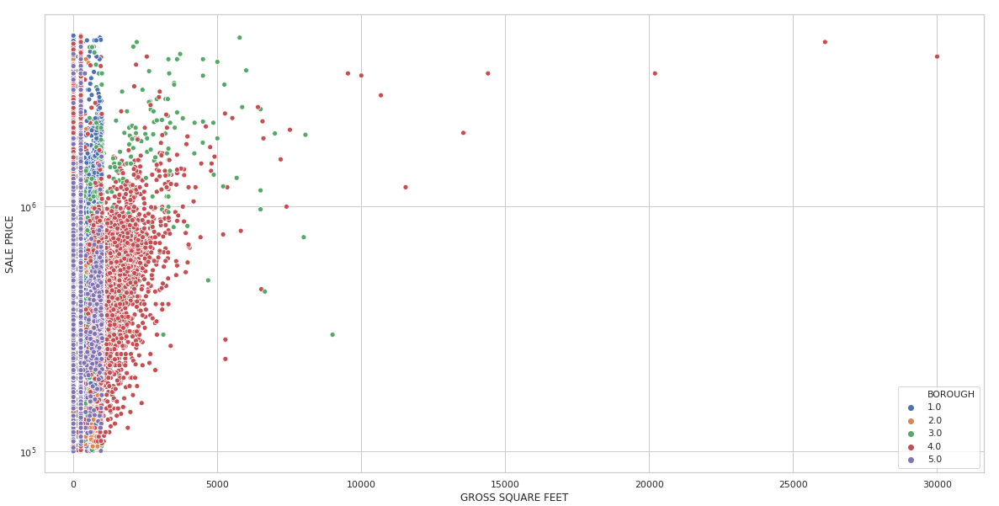
Total Units vs Sale Price
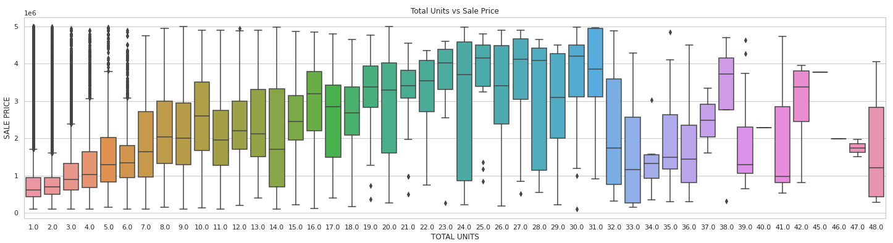
Residential Units vs Sale Price
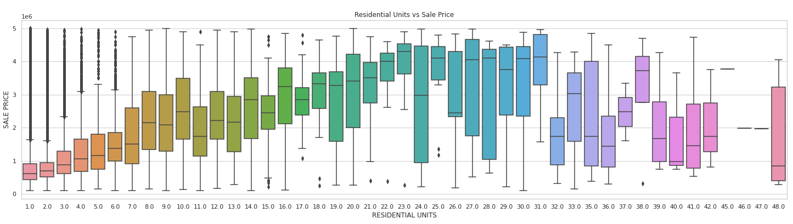
Commercial Unit vs Sale
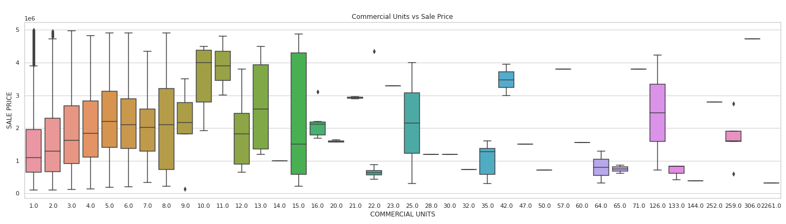